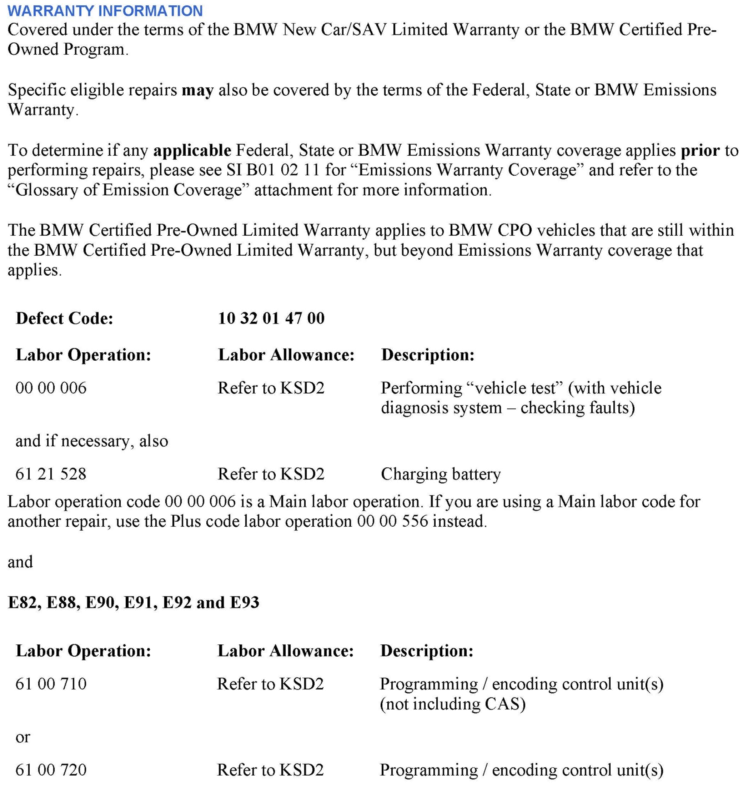
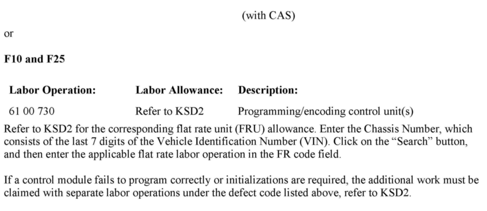

Computer/Controls - Idle Fluctuation During Warm-up Phase
SI B12 21 12Engine Electrical Systems
December 2012
Technical Service
SUBJECT
N51, N52K and N52T: Idle Fluctuation During Engine Warm-up Phase
MODEL
E82, E88, E89, E90, E91, E92, E93 with either the N51 or N52K engine
Produced from June 2006 to November 2012
F10 and F25 with the N52T engine
Produced from May 2009 to November 2012
SITUATION
After a cold engine start, the idle speed may be unstable or start fluctuating up and down slightly while the vehicle is stopped.
On vehicles with automatic transmissions, roughness or shuddering may be felt during this warm-up period when diving away slowly in "D" or in "R" without depressing the accelerator pedal.
No relevant errors are stored in the DME fault code memory, and these symptoms are no longer present once the engine is at operating temperature (> 90[]C).
CAUSE
Unfavorable DME software
CORRECTION
Perform a vehicle test.
Follow the symptom test plan using only ISTA/D 2.34 and higher.
This test plan can be found using the following path:
"Function Structure / 01 Drive / Engine Electronics, MSV / [!} Current fault patterns / Engine speed variations, vehicle jerks
ABL - W1214_WAS87 - Speed fluctuations / vehicle jerks".
Select the appropriate symptom from the list and follow the test plan recommendation.
Improved DME software was introduced with the following integration levels in ISTA/P 2.48.1:
E89x-12-07-508 for the E Series
F010-12-11-502 for the F10
F025-12-07-508 for the F25
Note that ISTA/P will automatically reprogram and code all programmable control modules that do not have the latest software.
For information on programming and coding with ISTA/P, refer to CenterNet / Aftersales Portal / Service / Workshop Technology / Vehicle Programming.
Note:
When the ISTA system message displays: Battery voltage only "XX.XX" V. Please connect charger. Please note the displayed battery voltage reading in the repair order comments section. This documentation is not necessary when part of an approved Technical Service repair procedure; the battery charger is required to be attached before performing the Vehicle Test.


WARRANTY INFORMATION